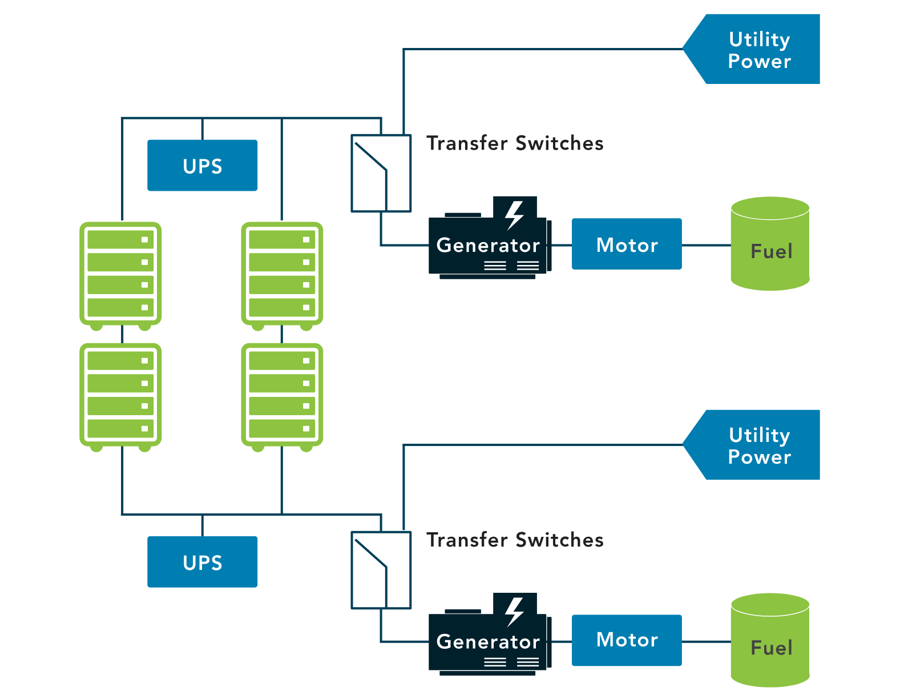
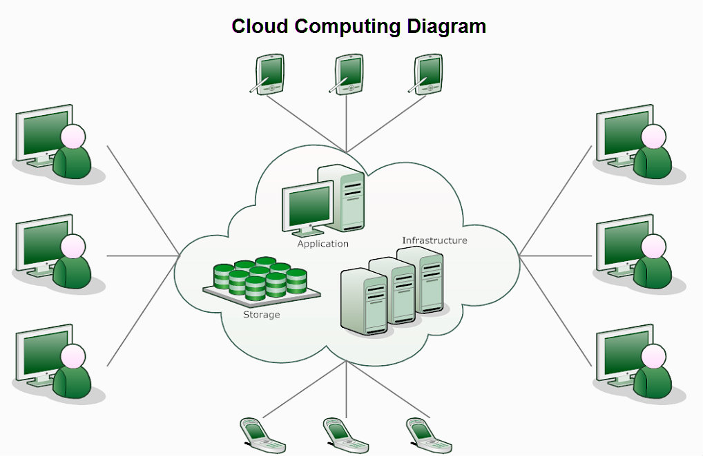
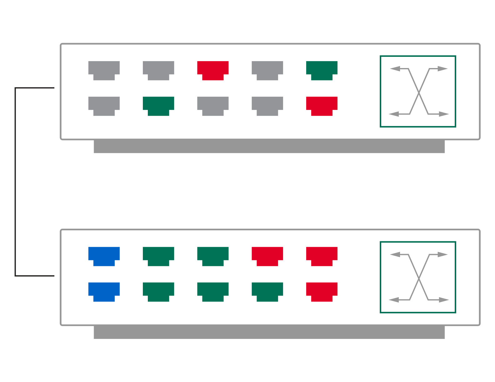
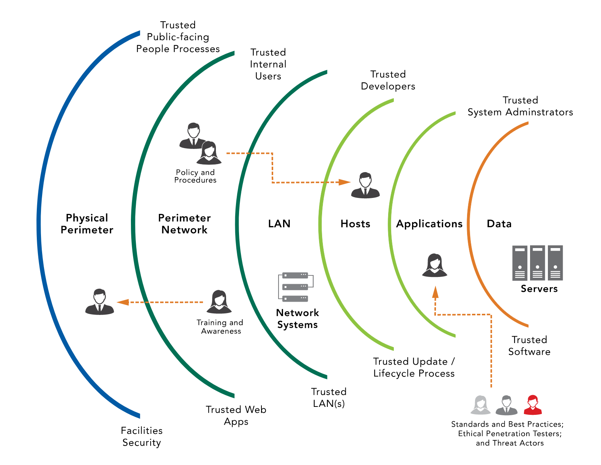

#
4.3 Understand Network Security Infrastructure
#
4.3.1 On-premises
An on-premise data center requires typically requires:
- HVAC (Humidity, Ventilation, Air Conditioning) System.
- Power.
- Fire Suppression.
- Data Center/Closet.
#
Heating, Ventilation, and Air Conditioning (HVAC) / Environmental Control
Proper management of environmental factors, including temperature and air quality, is crucial for the efficient operation of data centers.
- Temperature Control: High-density equipment and equipment within enclosed spaces require adequate cooling and airflow. The recommended temperature range for optimized maximum uptime and hardware life is from 64° to 81°F (18° to 27°C). It is also recommended that a rack should have three temperature sensors positioned at the top, middle, and bottom to measure the actual operating temperature of the environment.
- Air Quality Control: Aside from temperature and airflow, the quality of air is also crucial. Contaminants like dust and noxious fumes can impact the performance and lifespan of equipment. Hence, appropriate controls to minimize their presence are essential.
- Monitoring Systems: Monitoring systems for potential hazards like water or gas leaks, sewer overflow, or HVAC failure should be integrated into the building control environment. These systems should provide alarms to alert the staff about any anomalies promptly.
- Contingency Planning: Plans to respond to the warnings given by the monitoring systems should prioritize the systems in the building. This way, the impact of a major system failure on people, operations, or other infrastructure can be minimized.
#
Power Management
Maintaining constant and consistent electrical power is vital for data center and information system operations. Fluctuations in power quality can affect system lifespan, while disruptions can halt operations entirely.
- Backup Generators: Backup generators should be sized adequately to cater to the critical load, which includes both the computing resources and the supporting infrastructure. These generators serve as an alternate power source during power outages.
- Battery Backups: Battery backups (also known as Uninterruptible Power Supply or UPS) should also be appropriately sized. They need to be capable of carrying the critical load until the backup generators start and stabilize.
- Regular Testing: Just like data backups, it is necessary to regularly test power backup systems. This ensures that the failover to alternate power sources functions correctly in real outage situations.
#
Fire Suppression
Appropriate fire detection and suppression systems are crucial in data center environments. The choice of system depends on several factors including the size of the room, typical human occupation, egress routes, and the potential risk of damage to the equipment.
- Water-Based Systems: While commonly used in many settings, water-based fire suppression systems can cause substantial harm to servers and other electronic components.
- Gas-Based Systems: Gas-based fire suppression systems are more friendly to electronics and often preferred in data centers. They extinguish fires by reducing the oxygen level in the room or by using chemical reactions to extinguish the fire. However, these gases can be toxic to humans and require proper safety measures.
- Considerations: The choice between different fire suppression systems often involves a trade-off between potential damage to equipment and safety risks to personnel. Appropriate safety measures and precautions should always be put in place to minimize both types of risks.
#
Redundancy
Redundancy is a crucial design principle in ensuring the reliability and availability of data centers. The concept involves creating duplicate components, so in case of a failure, a backup is always available. This concept is widely applied in various aspects of a data center.
- Utility Services: Risk assessments should determine whether multiple, separate utility service entrances are necessary for redundant communication channels and/or mechanisms.
- Power Supplies: For full redundancy, devices should have dual power supplies connected to diverse power sources. This ensures that if one power supply fails, the other can still provide the necessary power to keep the device running.
- Backup Power: Power sources should be backed up by batteries and generators. This provides a secondary source of power in case the primary power source fails.
- Generators: They work by burning gasoline, propane or even solar panel. In a high-availability environment, even generators should be redundant and powered by different fuel types. This provides additional layers of redundancy, ensuring that power is available even in the event of a generator or fuel source failure.

#
Memorandum of Understanding (MOU)/Memorandum of Agreement (MOA)
To enhance Business Continuity (BC) and Disaster Recovery (DR) capabilities, organizations often enter into agreements with similar organizations. In these agreements, the parties commit to sharing resources and operational space in the event of an emergency that prevents normal functioning.
- For instance, two competing hospitals in the same city might have an agreement that if one hospital experiences an emergency (like a fire, flood, power loss), the affected hospital can temporarily relocate personnel and systems to the other hospital.
These agreements, known as joint operating agreements (JOA), memoranda of understanding (MOU), or memoranda of agreement (MOA), help protect the involved entities and their industries as a whole. They can be mandated by regulatory requirements or simply be part of administrative safeguards within an industry.
The primary difference between an MOA/MOU and a Service Level Agreement (SLA) is that:
- An MOA/MOU relates to what can be done with a system or the information.
- An SLA provides granular details about the services, such as the availability of technicians or specific accessibility timings for backup systems.
We must be very cautious when outsourcing with cloud-based services, because we have to make sure that we understand exactly what we are agreeing to. If the SLA promises 100 percent accessibility to information, is the access directly to you at the moment, or is it access to their website or through their portal when they open on Monday? That's where you'll rely on your legal team, who can supervise and review the conditions carefully before you sign the dotted line at the bottom.
#
4.3.2 Cloud Computing
Cloud computing typically refers to an internet-based set of computing resources provided by a Cloud Service Provider (CSP) and usually sold as a service.
Much like the power grid, cloud computing:
- Is provisioned in a geographic location and sourced using methods not necessarily apparent to the consumer.
- Provides services via a standard interface.
- Allows users to pay only for what they use.
Cloud computing is, therefore, a highly scalable, elastic, and user-friendly utility for the provisioning and deployment of Information Technology (IT) services.
The National Institute of Standards and Technology (NIST) provides a commonly cited definition of cloud computing:
"Cloud computing is a model for enabling ubiquitous, convenient, on-demand network access to a shared pool of configurable computing resources (e.g., networks, servers, storage, applications, and services) that can be rapidly provisioned and released with minimal management effort or service provider interaction." - NIST SP 800-145

#
Characteristics:
- Metered Usage: Usage is measured and priced according to units (or instances) consumed. These costs can also be allocated back to specific departments or functions within the organization.
- Reduced Cost of Ownership: Since there's no need to purchase any assets for everyday use, it eliminates asset depreciation over time, and reduces associated maintenance and support costs.
- Energy Efficiency: Cloud computing can help reduce energy and cooling costs, contributing to "green IT" initiatives through optimal use of IT resources and systems.
- Scalability: Cloud computing allows an enterprise to scale up new software or data-based services/solutions quickly, without having to install substantial hardware locally.
#
Service Models
#
Software as a Service (SaaS)
- Software as a Service (SaaS) is a cloud computing model providing access to software applications over the network.
- SaaS applications are hosted and maintained by a cloud service provider or vendor.
- Users can access these services with an internet connection and credentials.
- SaaS automatically manages updates and patches.
- SaaS offers ease of use and requires minimal administration from the user.
- All users run the same version of the software, ensuring standardization and compatibility.
#
Platform as a Service (PaaS)
- Platform as a Service (PaaS) provides an environment for customers to build and operate their own software applications.
- It allows customers to rent virtualized servers and associated services over the internet from a cloud service provider.
- Customers don't manage the underlying cloud infrastructure (like network, servers, operating systems or storage), but they control the deployed applications and possibly the configurations of the application-hosting environment.
- PaaS provides a toolkit for conveniently developing, deploying and administering application software.
- It's structured to support large numbers of consumers, process large quantities of data and can potentially be accessed from any point on the internet.
- PaaS clouds typically provide a set of software building blocks, development tools like programming languages and supporting run-time environments.
- They also typically provide tools that assist with the deployment of new applications. In some cases, deploying a new software application in a PaaS cloud is as simple as uploading a file to a web server.
- PaaS clouds provide and maintain the computing resources (like processing, storage and networking) needed for consumer applications to operate.
- The operating system in a PaaS environment can be changed and upgraded frequently, along with associated features and system services.
#
Infrastructure as a Service (IaaS)
- Infrastructure as a Service (IaaS) provides network access to traditional computing resources like processing power and storage.
- It delivers basic computing resources to consumers, which includes servers, storage and sometimes networking resources.
- Consumers install operating systems and applications on these resources and perform all required maintenance on the operating systems and applications.
- While consumers can use the related equipment, the cloud service provider retains ownership and is ultimately responsible for hosting, running, and maintaining the hardware.
- IaaS is also referred to as 'hardware as a service' by some customers and providers.
- Benefits of IaaS for organizations include:
- The ability to scale up and down infrastructure services based on actual usage. This is beneficial in situations where there are significant spikes and dips in the usage curve for infrastructure.
- Retaining system control at the operating system level.
#
Deployment Models
#
Public
- Public clouds refer to cloud services that are available to the general public.
- Access to public clouds is typically straightforward, requiring application for the service and payment.
- It is a shared resource, allowing multiple users to use the service as part of a resource pool.
- A public cloud deployment model provides assets that any consumers can rent or lease. These assets are hosted by an external cloud service provider (CSP).
- Service level agreements can be used to ensure that the CSP delivers the cloud-based services at a level that is acceptable to the organization.
#
Private
- Private clouds are similar to public clouds, but instead of being shared with the public, they are typically developed and deployed for a specific organization.
- This model includes cloud-based assets for a single organization.
- The organization can either build and manage their private clouds using their own resources or rent resources from a third-party, with maintenance requirements split based on the service model (SaaS, PaaS, or IaaS).
- Private clouds provide organizations and their departments with exclusive access to computing, storage, networking, and software assets available within the private cloud.
#
Hybrid
- A hybrid cloud model combines two forms of cloud computing deployment models, typically a public and a private cloud.
- This model is gaining popularity as it provides organizations the ability to retain control of their IT environments.
- It allows for the use of public cloud services for non-mission-critical workloads while taking advantage of flexibility, scalability, and cost savings.
- Key benefits of hybrid cloud deployments include:
- Retaining ownership and oversight of critical tasks and processes related to technology.
- Reusing previous investments in technology within the organization.
- Maintaining control over most critical business components and systems.
- Providing a cost-effective means to fulfill non-critical business functions using public cloud components.
#
Community
- Community clouds can be either public or private, making them unique.
- These clouds are generally developed for a specific community with shared interests or objectives.
- Examples include a public community cloud focused on organic food or a community cloud specifically for financial services.
- The concept of a community cloud allows people with similar interests or objectives to come together, share IT capabilities and services, and utilize them in a way that is beneficial to their shared interests.
#
Managed Service Provider
- A Managed Service Provider (MSP) is a company that oversees information technology assets for another company.
- MSPs are commonly employed by small and medium-sized businesses to manage daily operations or provide expertise in areas the company lacks.
- MSPs can provide services such as network and security monitoring, patching services, and cloud-based services.
- Managed Detection and Response (MDR) is an example of a cloud-based service provided by MSPs, where the vendor monitors firewall and other security tools to provide expertise in handling events.
- Other common MSP services include:
- Augmenting in-house staff for projects
- Providing specialized expertise for implementing a product or service
- Offering payroll services
- Managing Help Desk service
- Monitoring and responding to security incidents
- Managing all in-house IT infrastructure
#
Service-Level Agreement
- A Service-Level Agreement (SLA) is a contractual agreement between a cloud service provider and a cloud service customer that outlines the quality of the cloud services delivered.
- SLA is similar to a rule book and legal contract, detailing the minimum level of service, availability, security, controls, processes, communications, support, and other critical business elements agreed upon by both parties.
- The main purpose of an SLA is to document specific parameters, minimum service levels, and remedies for any failure to meet the specified requirements. It should also confirm data ownership and specify data return and destruction details.
- Important aspects of an SLA can include:
- Cloud system infrastructure details and security standards
- Customer right to audit legal and regulatory compliance by the Cloud Service Provider (CSP)
- Rights and costs associated with continuing and discontinuing service use
- Service availability
- Service performance
- Data security and privacy
- Disaster recovery processes
- Data location
- Data access
- Data portability
- Problem identification and resolution expectations
- Change management processes
- Dispute mediation processes
- Exit strategy
#
4.3.3 Design
#
Network Segmentation
- Network segmentation is a process that involves managing and controlling traffic among networked devices.
- Complete or physical network segmentation refers to the isolation of a network from all outside communications.
- In this kind of segmentation, transactions can only occur between devices within the segmented network.
- This approach enhances security by limiting potential exposure to threats and containing them within the segmented network, should they occur.
- It also improves network performance by reducing unnecessary traffic.
- Network segmentation is a key strategy in network design and is commonly used in cybersecurity measures to reduce attack surfaces.
#
Demilitarized zone (DMZ)
- A DMZ, or Demilitarized Zone, is a specific part of the network that is designed to be accessed by outside users.
- Despite being accessible from outside, it is still isolated from the organization's private internal network.
- DMZ is a security measure used to protect the internal network from potential external threats.
- It often hosts public-facing services such as web servers, email servers, file servers, and other resources.
- The DMZ acts as a buffer zone, reducing the risk of an intruder reaching the internal network even if they compromise a server within the DMZ.
#
Virtual Local Area Network (VLAN)
- Virtual Local Area Networks (VLANs) are a network configuration strategy that allows for the logical segmentation of networks.
- VLANs are created by network switches.
- With VLANs, you can divide a physical network into multiple logical networks without changing the physical connections or layout.
- These logical networks can group together devices regardless of their physical location.
- VLANs enhance network security and efficiency by reducing broadcast traffic, simplifying network management, and enforcing security policies.
- In a diagram, two or more VLANs would appear as separate networks even though they may share the same physical switch or switches.
- VLANs allow network administrators to create software-based LAN segments using switches. This can help segregate or consolidate traffic across multiple switch ports.
- Devices within a VLAN communicate through switches as if they were on the same Layer 2 network.
- Communications between different VLANs must be enabled as they act as separate networks.
- Broadcast traffic is limited to the VLAN, reducing congestion and limiting the effectiveness of certain attacks.
- VLAN administration simplifies network management, as VLANs can be reconfigured when users change their physical location or require access to different services.
- VLANs can be configured based on switch port, IP subnet, MAC address, and protocols.
- VLANs do not guarantee network security. There exist attacks (e.g., VLAN hopping) that allow malicious users to intercept traffic from other VLANs.
- VLAN technology is one tool among many that can improve the overall security of a network environment.

#
Virtual Private Network (VPN)
- A Virtual Private Network (VPN) is a tool that provides secure, encrypted connections over the internet.
- It establishes a "tunnel" for point-to-point transmission of both authentication and data traffic over a network that may not be secure (often the public internet).
- VPNs protect the data traffic from potential eavesdropping, tampering, or theft while in transit.
- They can be used to connect individual users (remote workers) to a network or to connect multiple networks together securely.
- In a typical setup, workstations access the internet through a firewall and a VPN for added security.
#
Defense In Depth
- Defense in depth is a cyber security strategy that uses a layered approach to protect information systems.
- It utilizes multiple types of security controls (preventive, detective, corrective, etc.) arranged in literal or theoretical layers.
- The aim is to prevent a single point of failure in the system. If one layer is breached, others are still in place to protect the system.
- This approach avoids a monolithic security stance where a single failure could compromise the entire system.
- Controls may include firewalls, intrusion detection systems, access controls, data encryption, and network segmentation among others.
- The layers of defense might include physical security, network security, computer security, application security, and policies/training/awareness.
- The concept is based on a military strategy by the same name and applies the idea that it's more difficult for an attacker to breach multiple layers of defense compared to just one.
- It involves various types of controls: administrative, technological, and physical that all work together to secure an organization and its systems.
- Examples of these layers include:
- Data: Controls protect the actual data, for example, using encryption, data leak prevention, identity and access management.
- Application: Controls protect the application itself, such as application firewalls and database monitors.
- Host: Controls at the endpoint level, for example, antivirus software, endpoint firewalls, configuration and patch management.
- Internal network: Controls protect against uncontrolled data flow and user access across the network, such as intrusion detection systems, internal firewalls, and network access controls.
- Perimeter: Controls protect against unauthorized network access. This includes gateway firewalls, honeypots, malware analysis and secure DMZs.
- Physical: Physical barriers like locks, walls, and access controls.
- Policies, Procedures, and Awareness: Administrative controls that reduce insider threats and identify risks early on.

#
Network Access Control (NAC)
- The network is one of an organization's most crucial assets. Therefore, knowing and controlling access to it is vital.
- Network access initially was limited to internal devices but expanded to include remote connections over time, especially with the introduction of Bring Your Own Device (BYOD) and the Internet of Things (IoT).
- A wide variety of devices could be found within an organization due to IoT, ranging from HVAC systems and security systems to vending machines.
- An effective NAC solution should enforce the organization's access control and associated security policies.
- A NAC device provides the necessary network visibility for access security and can be utilized for incident response.
- The NAC device should be capable of isolating noncompliant devices within a quarantined network and provide a mechanism to correct noncompliant elements.
- The ultimate goal is to ensure that all devices seeking to join the network comply with the requirements outlined in the organization's policies.
- The visibility provided by NAC should cover internal users as well as temporary users such as guests or contractors, and any devices they bring into the organization.
Some use cases for NAC deployment include:
- Medical devices
- IoT devices
- BYOD/mobile devices (laptops, tablets, smartphones)
- Guest users and contractors
- It plays a key role in maintaining the security of a network, especially in larger organizations with many network users and devices.
#
Zero Trust
- Zero Trust is a security model that operates on the fundamental principle of "never trust, always verify."
- It suggests that organizations should not automatically trust anything inside or outside its perimeters and should instead verify anything and everything trying to connect to its systems before granting access.
- Zero Trust networks are often microsegmented, with firewalls or security boundary control devices at nearly every connecting point to prevent unrestricted movement within the network.
- This concept recognizes that users with free reign inside a trust-but-verify environment can potentially find and exploit vulnerabilities.
- The analogy of a rock concert is often used to explain Zero Trust. In a traditional environment, once you show your ticket at the entrance, you have full access to the venue. In a Zero Trust environment, your ticket (or credentials) would be checked multiple times at different stages.
- Zero Trust adds defenses at the user, asset, and data level, rather than focusing solely on perimeter defense. It insists that every process or action a user attempts to take must be authenticated and authorized.
- While microsegmentation focuses on adding internal perimeters, Zero Trust shifts the focus to assets or data, protecting these directly rather than merely reinforcing the surrounding walls.
![[Pasted image 20230723162428.png]]
#
Network Segmentation For Embedded Systems and Internet of Things (IoT)
- Embedded systems are computers implemented as part of a larger system, designed around a limited set of specific functions.
- Examples of embedded systems include network-attached printers, smart TVs, HVAC controls, smart appliances, smart thermostats, and medical devices.
- Network-enabled devices are portable or nonportable devices with native network capabilities.
- These devices can include smartphones, mobile phones, tablets, smart TVs or streaming media players, network-attached printers, game systems, etc.
- The Internet of Things (IoT) refers to the collection of devices that can communicate over the internet with one another or with a control console.
- IoT devices could also be labeled as smart devices or smart-home equipment.
- Many industrial environmental control ideas found in office buildings are now available for small offices or personal homes.
- Embedded systems and network-enabled devices communicating with the internet are considered IoT devices and need special security measures.
- A security breach in an embedded system can potentially cause harm to people and property due to its control over a mechanism in the physical world.
- Many of these devices have multiple access routes (ethernet, wireless, Bluetooth, etc.), which require special care to isolate them from other devices on the network.
- Logical network segmentation can be imposed using switches, VLANs, or other traffic-control means, including MAC addresses, IP addresses, physical ports, protocols, or application filtering, routing, and access control management.
- Network segmentation can be used to isolate IoT environments, enhancing their security.
#
Microsegmentation
- Current adversaries employ polymorphic toolsets that enable threats to bypass static security controls.
- Modern cyberattacks exploit traditional security models to move freely between systems within a data center.
- Microsegmentation aids in defending against these threats.
- Understanding the protection requirements for traffic within a data center and for traffic to and from the internet traffic flows is a fundamental design requirement of microsegmentation.
- By avoiding infrastructure-centric design paradigms, organizations can become more efficient at service delivery in the data center.
- Moving away from infrastructure-centric designs also enables organizations to be better at detecting and preventing advanced persistent threats.